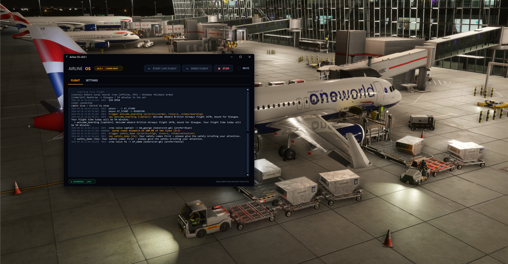
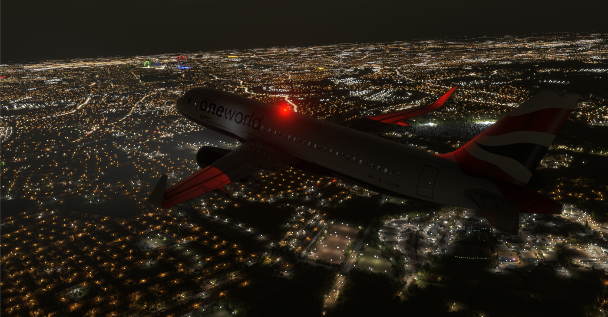
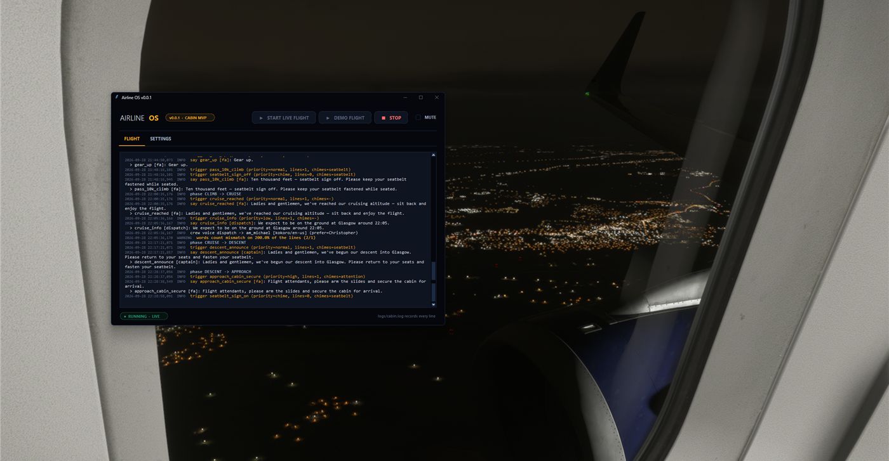
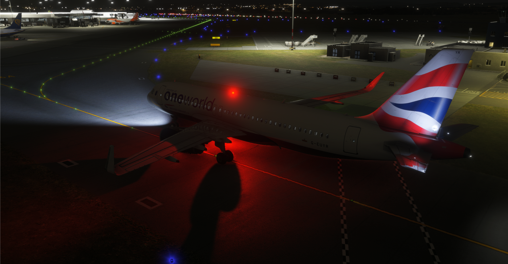

First official flight
Last night's BA1470 — London Heathrow to Glasgow is the first run we're willing to call official: pushed back from the stand, flew the route, landed, and shut down at the gate with nothing cancelled and no mid-flight log review. The cabin talked the whole way — boarding through disembark, each phase announcing itself once — and then the post-flight review wrote thirteen notes. All thirteen are already closed.

WHAT WENT GREEN
- Gate to gate, start to finish. Flight #1 earned its write-up by being cut at taxi. This one ran the whole journey — boarding, pushback, taxi out, takeoff, climb, cruise, descent, approach, landing, taxi in, on stand — with the flight-phase engine tracking every transition and the cabin responding to each one.
- Every announcement, once each. The full 24-trigger spec fired with zero duplicates. The announcement spam flight #1 exposed (a sim state oscillating between pushback and taxi) stayed fixed under real conditions: the phase engine now latches pushback complete and holds settled states before a line can fire again.
- The words matched the flight. Real cruising altitude read back to the cabin, arrival announced with the destination's local time and its weather in plain words — "fine, with clear skies and good visibility", not a raw flight-plan category code.

THE POST-FLIGHT REVIEW
A flight is only useful if you read the logs afterwards. Ours wrote thirteen notes. The highlights, honestly:
- Some lines belong to the flight deck, not the cabin. "Positive rate", "gear up", "cleared for takeoff" — passengers never hear those. Cut.
- The seatbelt chime had a phantom source. The sign state was being read from the wrong sim variable, so the chime could fire when nothing happened — and one climb callout claimed sign state it hadn't verified, doubling the chime. It now reads the actual cabin alert switch, and each chime has exactly one owner.
- The taxi callout didn't wait for pushback to finish. Pushback complete is now latched, and the safety demo gets a beat of its own — it plays into the pushback, never racing the taxi-out line.
- The arrival ETA was telling the current time. It now uses the real estimated arrival from the flight plan / FMS, converted to the destination's clock — so "we'll be on the ground at…" is a forecast, not a timestamp.
- No airline's safety video ships with the product. Those recordings are copyrighted and none can be found legally. The demo plays its chimes, leads in with our own announcement — and there's a documented drop-in folder so you can supply your own airline's clip.
- "VFR Conditions" isn't a passenger briefing. Weather announcements now speak plain language, sourced from the flight plan — no weather API, no jargon.
Thirteen notes, closed the next day, each one guarded by the check suite — which now runs 19 checks, all green.

NEW IN THE APP
- Every flight starts behind an acknowledgement. This is a development build and it says so: a gate now opens before every live or demo flight, and START stays dead until you tick "I understand and wish to continue". No clicking past it by accident.
- The PA is on the dashboard. A manual PA row picks any of the 24 announcements and says it on demand while a flight is running — useful for testing, and for that one announcement you want to hear again.

WHAT'S NEXT
More of the same, with harder conditions: busy airports, weather, and the arrival rush — every flight still feeds the post-flight review. Dates are unchanged: closed alpha Dec 2026 – Jan 2027, Cabin v1.0 estimated March 2027.
← Back to devlog